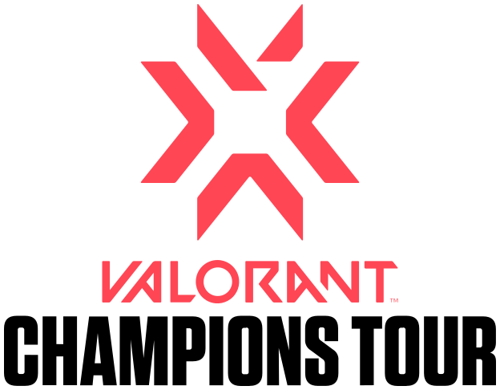

Welcome to E-sport page!
Teams
There are some teams in Valorant: E-sports
 Valorant 2024 champions
Valorant 2024 champions
VCT
What is: VCT?
The Valorant Champions Tour(VCT)is a global competitive E-sports
tournament series for the cideo game Valorant organied by Riot Games.
The game's developers.
Series runs multiple events throughout each
season,culminating in Valorant Champions, the tip-level event of the
tour.The VCT was announced in 2020, with its inaugural season taking place in 2021.
